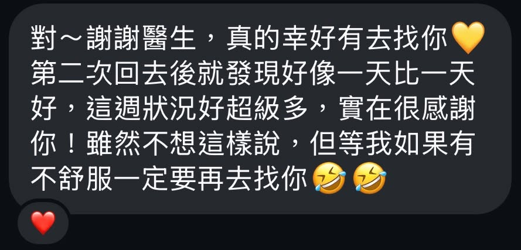

診間裡最令人開心的「取消預約」：面對頸椎椎間盤突出，免動刀的逆轉勝
【 診間裡最令人開心的「取消預約」：面對頸椎椎間盤突出，免動刀的逆轉勝 】
今天診間傳來一個振奮人心的消息。
櫃檯助理告訴我，一位原本預約好下次回診的年輕患者，因為「症狀已經完全改善」，主動提前取消了約診。
說實話，剛聽到她這麼快就能「畢業」時，我還不太敢相信，於是親自傳訊向這位患者Ｗ小姐確認。不久後，我收到了這段可愛的回覆：
「真的幸好有去找你💛 第二次回去後就發現好像一天比一天好，這週狀況好超級多……雖然不想這樣說，但等我如果有不舒服一定要再去找你🤣🤣」
看到這段文字，我懸著的一顆心才真正放了下來。
這是一場非常不容易，卻也極度幸運的逆轉勝。
－
⚡ 突如其來的麻痛，與讓人心涼一半的 MRI
Ｗ小姐是一位工作與生活都非常認真的上班族。幾週前，她突然感到左肩與上臂一陣劇烈的麻痛。她很機警地立刻求助骨科與復健科，經歷了注射、電療拉脖子與徒手治療。
兩週後來到我的診間時，劇痛雖已緩解，但沿著左側肩胛骨內側、肩膀、手肘，一路延伸到大拇指與食指，始終殘留著令人極度焦慮的「麻、刺、痛」。
為了安全起見，我調閱了健保雲端的 MRI影像。打開檔案的瞬間，我心裡涼了一半：在頸椎 C5-C6 的位置，有一大坨明顯突出的椎間盤（HIVD），不偏不倚地壓迫著神經根。 這完美解釋了她典型「橈神經」走向的麻刺感。
－
🤝 醫病之間的坦誠：勇敢克服恐懼的決心
面對這樣的影像學結果，我必須誠實以告。
我向她解釋了結構壓迫與症狀的關聯，並直白地說：「復健科醫師請妳先拉脖子是正確的，但如果保守治療預後不佳，最終還是有可能需要面臨開刀。」
第一次遇到這種狀況的她，神情充滿了緊張與不安。她坦言自己非常害怕動刀，更是一位極度「怕針」的人。但她深吸了一口氣，很勇敢地看著我說：「醫師，只要能好，我願意克服對針灸的恐懼。」
患者都展現了這樣的決心，身為醫師，當然必須全力拚一把。
－
🔍 內針傷同治：從力學與神經尋找破口
雖然影像上的壓迫看起來很嚇人，但在進行脈診與理學評估後，我發現了值得樂觀的轉機：她的肌肉力量維持得不錯，且發作時間不算太久。
透過 肌筋膜脈學中醫應用 脈象資訊，進一步評估後，我找出了身體力學當機的「關鍵點」：
枕下區與頸部深層屈肌群被抑制，導致頸椎失去穩定的支撐力。
下斜方肌失能，造成肩胛骨控制力不足，進一步拉扯了肩頸神經。
於是，我們展開了身體結構與神經的重建工程：
肌筋膜乾針： 精準解除上述失能肌群的緊繃與代償。
徒手治療： 針對高位頸椎進行輕柔的釋放與鬆解，理順頸椎空間。
神經鬆動術： 針對她 C5-C6 偏前外側的壓迫，施作橈神經的動態鬆動，解除神經的張力死結。
－
👨⚕️ 醫師的真心話：努力加上運氣的奇蹟
我們維持一週一次、每次半小時的治療。就在這短短的「兩次」療程後，如同她訊息裡說的，身體一天比一天好，症狀奇蹟似地消退了。感謝她對自己的努力不懈，也感謝這如奇蹟般的運氣降臨！
坦白講，面對影像學上如此明確的椎間盤突出，這絕對是個艱難的考題。我也必須誠實地說，不是每一位 HIVD 的患者，都能夠擁有如此快速的康復期。 這次的成功，除了精準的評估與治療，也有著極大的幸運成分（包含患者年輕、肌力未受損，以及她極高的配合度）。
但這個案例也再次證明：面對嚴重的結構壓迫，只要找出正確的力學失衡點，透過「針」的深層釋放與「手」的精準引導，中西醫結合的結構治療，確實能為患者爭取到免於動刀的機會。
雖然妳說「有不舒服一定再來找我」，但我還是要在這裡真心祝福這位勇敢的女孩：永遠都不要再因為這個痛來找我了！
太初中醫診所 東門中醫
中醫師 黃彥鈞
【 ⚠️ 免責聲明與就醫提醒 】
本文所分享之臨床案例皆已進行去識別化與隱私保護處理，內容僅供醫療衛教觀念交流與參考。椎間盤突出（HIVD）之嚴重程度與疾病進程皆屬獨特個案，並非所有保守治療皆能達到相同速效。若您有肩頸劇痛、伴隨上肢麻木或無力等神經學症狀，請務必尋求受過正規訓練之專業醫師進行影像學與理學雙重評估，切勿延誤黃金治療時機。
#椎間盤突出 #頸椎壓迫 #手麻 #橈神經 #神經鬆動術 #肌筋膜乾針 #中醫徒手 #醫病關係
